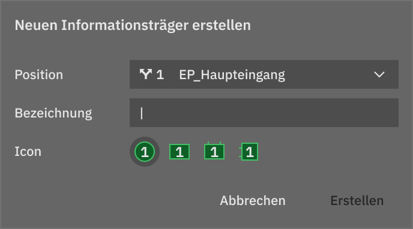
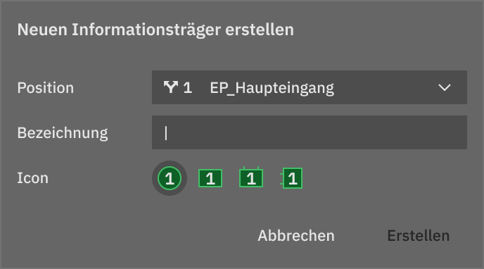

Focus 1
Aid designers in analyzing project sites

Focus 2
Eliminate repetitive tasks – simplify management of signage databases?

Focus 3
Use simulation to preview sign concepts before production?
You’re working with signage and wayfinding systems?
Aid designers in analyzing project sites
Eliminate repetitive tasks – simplify management of signage databases?
Use simulation to preview sign concepts before production?
Based on the three main areas of focus, we created a vision for the Destinations application.
Learn about the concept
 


Our core features
Get an overviewThis project has been chosen to be part of the goHfG founders initiative.